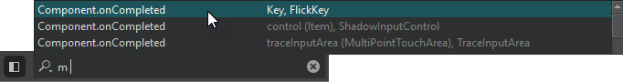

Move in QML code
Find QML methods and types, and move to the C++ implementation of a QML type.
Locate QML methods
To locate a QML method:
- Press Ctrl+K to activate the locator.
- Type m, followed by a space.

- Double-click a QML method in the list to move to it in the editor.
Find QML types
To find instances of a QML type in a project, place the cursor on the type and and do one of the following:
- Press Ctrl+Shift+U.
- Go to Tools > QML/JS > Find References to Symbol Under Cursor.
Inspect QML and JavaScript
To inspect QML and JavaScript properties, methods, and enums, place the cursor over them and go to Tools > QML/JS > Inspect API for Element Under Cursor.
Move between QML and C++
To move to the C++ implementation of a QML type in the code editor, place the cursor on the type and do one of the following:
- Press F2.
- Go to Follow Symbol Under Cursor in the context menu.
See also How To: Edit Code, Clangd, Edit Mode, and Navigate with locator.